ПЕРВАЯ ПОМОЩЬ ПРИ НАРУЖНОМ КРОВОТЕЧЕНИИ
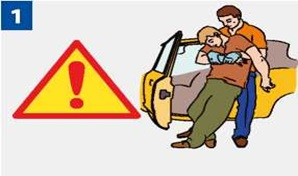
|
Убедись, что ни тебе, ни пострадавшему ничто не угрожает. Используй медицинские перчатки для защиты от биологических жидкостей пострадавшего. Вынеси (выведи) пострадавшего за пределы зоны поражения. |
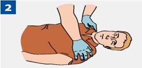
|
Проверь у пострадавшего сознание. |
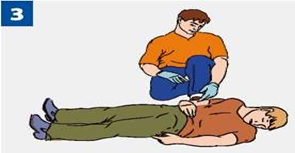
|
Если пострадавший в сознании, быстро (в течение нескольких секунд) проведи обзорный осмотр для определения сильного наружного кровотечения. |
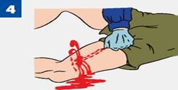
|
Останови кровотечение при его наличии. |
СПОСОБЫ ОСТАНОВКИ НАРУЖНОГО КРОВОТЕЧЕНИЯ:
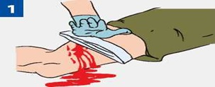
|
Выполни прямое давление на рану. |
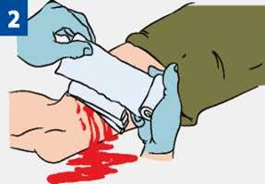
|
Наложи давящую повязку. Закрой рану несколькими сложенными салфетками или несколькими туго свернутыми слоями марлевого бинта. Туго забинтуй сверху. Если повязка промокает, поверх нее наложи еще несколько плотно свернутых салфеток и крепко надави ладонью поверх повязки. |
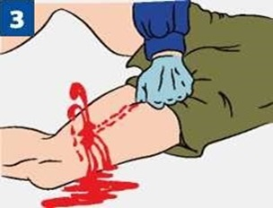
|
Если давящая повязка и прямое давление на рану неэффективны или сразу было обнаружено артериальное кровотечение из крупной артерии (бедренная, плечевая), выполни пальцевое прижатие артерии. Её следует сильно прижать пальцами или кулаком к близлежащим костным образованиям до остановки кровотечения. До наложения жгута не отпускай прижатую артерию, чтобы не возобновилось кровотечение. Если начал уставать, попроси кого-либо из присутствующих прижать твои пальцы сверху. |
Жгут – крайняя мера временной остановки артериального кровотечения!
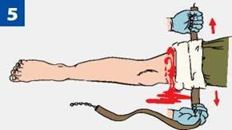
|
Наложи кровоостанавливающий жгут. Он накладывается на мягкую подкладку (элемент одежды пострадавшего) выше раны и как можно ближе к ней. |
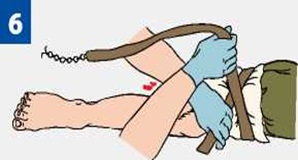
|
Подведи жгут под конечность и растяни. Затяни первый виток жгута и убедись, что кровотечение из раны прекратилось. |
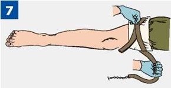
|
Наложи последующие витки жгута с меньшим усилием по восходящей спирали, захватывая предыдущий виток примерно на половину. |
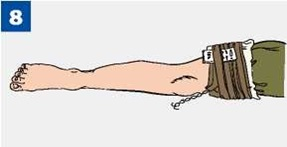
|
Вложи под жгут записку с указанием даты и точного времени наложения. Не закрывай жгут повязкой или шиной! Летом жгут можно держать 1 час, зимой - 30 минут. |
Если максимальное время наложения жгута истекло, а медицинская помощь недоступна, сделай следующее:
1. Пальцами прижми артерию выше жгута.
2. Сними жгут на 15 минут.
3. По возможности выполни массаж конечности.
4. Наложи жгут чуть выше предыдущего места наложения (если это возможно).
5. Максимальное время повторного наложения - 15 минут.
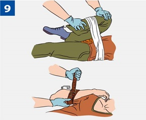
|
При сильном кровотечении в области сустава (например, паха) используй способ максимального сгибания конечности. Положи в область сустава несколько бинтов или свернутую одежду и согни конечность. Зафиксируй конечность в согнутом положении руками, несколькими оборотами бинта или подручными средствами. |
ПРИ ОТСУТСТВИИ ТАБЕЛЬНОГО ЖГУТА ИСПОЛЬЗУЙ ЖГУТ-ЗАКРУТКУ:
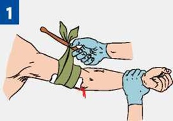
|
Наложи жгут-закрутку из подручного материала (ткани, косынки) вокруг конечности выше раны поверх одежды или подложив ткань на кожу. Завяжи концы его узлом так, чтобы образовалась петля. Вставь в петлю палку (или другой подобный предмет) так, чтобы она находилась под узлом. |
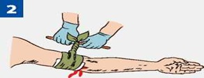
|
Вращая палку, затяни жгут-закрутку до прекращения кровотечения. |
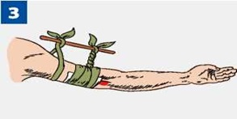
|
Закрепи палку во избежание ее раскручивания. Жгут-закрутка накладывается по тем же правилам, что и табельный жгут. |
Источник:
http://www.culture.mchs.gov.ru/medical/algorithms_of_first_aid_to_victims_of_traumatic_injuries_and_urgent_situations/ways_to_temporarily_stop_the_external_bleeding/
ТЕЛЕФОН СЛУЖБЫ СПАСЕНИЯ: 112